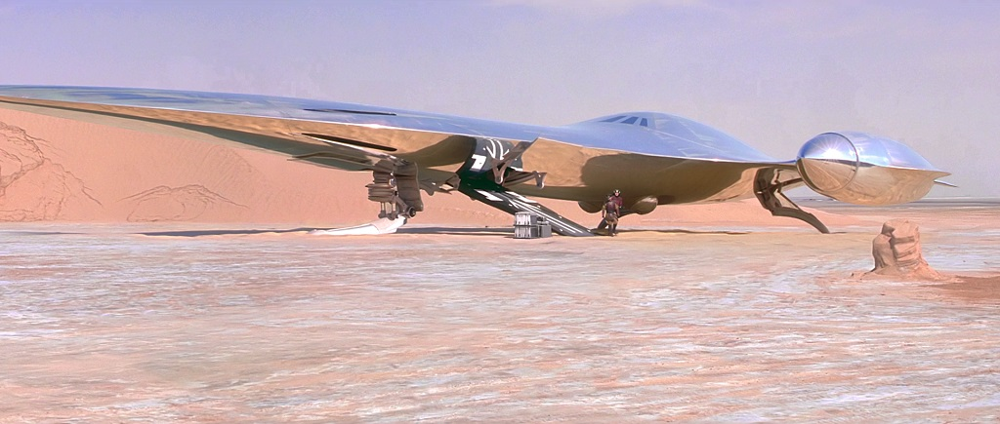

Le Vaisseau Royal de Naboo est un vaisseau de transport diplomatique au design élégant, caractérisé par sa coque argentée et ses lignes fluides, symbolisant la richesse et la sophistication de Naboo. Construit pour la vitesse et le luxe, il est utilisé par la Reine Amidala et ses représentants pour leurs voyages diplomatiques à travers la galaxie.
|  |